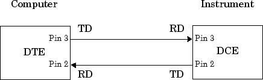
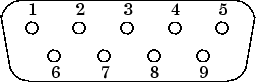
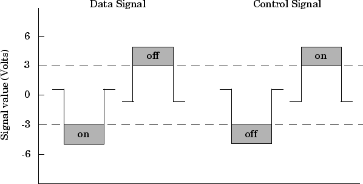
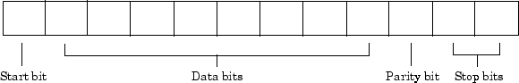
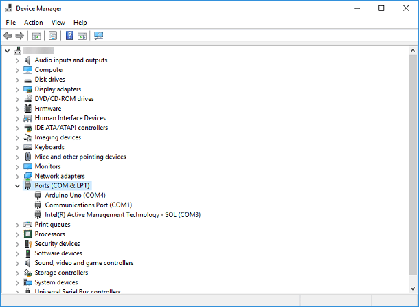
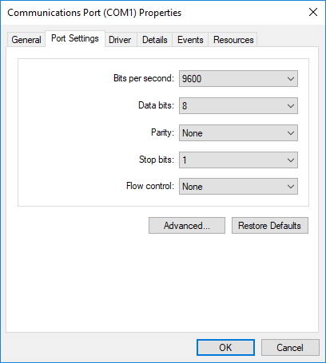

Serial Port Overview
What Is Serial Communication?
Serial communication is the most common low-level protocol for communicating between two or more devices. Normally, one device is a computer, while the other device can be a modem, a printer, another computer, or a scientific instrument such as an oscilloscope or a function generator.
As the name suggests, the serial port sends and receives bytes of information in a serial fashion—one bit at a time. These bytes are transmitted using either a binary format or a text (ASCII) format.
For many serial port applications, you can communicate with your instrument without detailed knowledge of how the serial port works. Communication is established through a serial port object, which you create in the MATLAB® workspace.
If your application is straightforward, or if you are already familiar with the topics mentioned above, you might want to begin with Create Serial Port Object.
Serial Port Interface Standard
Over the years, several serial port interface standards for connecting computers to
peripheral devices have been developed. These standards include RS-232, RS-422, and RS-485 —
all of which are supported by the serialport object. The most widely used
standard is RS-232.
The current version of this standard is designated TIA/EIA-232C, which is published by the Telecommunications Industry Association. However, the term “RS-232” is still in popular use, and is used here to refer to a serial communication port that follows the TIA/EIA-232 standard. RS-232 defines these serial port characteristics:
Maximum bit transfer rate and cable length
Names, electrical characteristics, and functions of signals
Mechanical connections and pin assignments
Primary communication uses three pins: the Transmit Data pin, the Receive Data pin, and the Ground pin. Other pins are available for data flow control, but are not required.
Note
This guide assumes that you are using the RS-232 standard. Refer to your device documentation to see which interface standard you can use.
Supported Platforms
The MATLAB serial port interface is supported on:
Linux® 64-bit
macOS 64-bit
Microsoft® Windows® 64-bit
Note
RS-232 is not supported on macOS 13 or later.
Connecting Two Devices with a Serial Cable
The RS-232 and RS-485 standard defines the two devices connected with a serial cable as the data terminal equipment (DTE) and data circuit-terminating equipment (DCE). This terminology reflects the RS-232 origin as a standard for communication between a computer terminal and a modem.
In this guide, your computer is considered a DTE, while peripheral devices such as modems and printers are considered DCEs. Note that many scientific instruments function as DTEs.
Because RS-232 mainly involves connecting a DTE to a DCE, the pin assignment definitions specify straight-through cabling, where pin 1 is connected to pin 1, pin 2 is connected to pin 2, and so on. A DTE-to-DCE serial connection using the transmit data (TD) pin and the receive data (RD) pin is shown below. Refer to Serial Port Signals and Pin Assignments for more information about serial port pins.

If you connect two DTEs or two DCEs using a straight serial cable, then the TD pin on each device is connected to the other, and the RD pin on each device is connected to the other. Therefore, to connect two like devices, you must use a null modem cable. As shown below, null modem cables cross the transmit and receive lines in the cable.

Note
You can connect multiple RS-422 or RS-485 devices to a serial port. If you have an
RS-232/RS-485 adaptor, then you can use the serialport object with these
devices.
Serial Port Signals and Pin Assignments
Serial ports consist of two signal types: data signals and control signals. To support these signal types, as well as the signal ground, the RS-232 standard defines a 25-pin connection. However, most PCs and UNIX® platforms use a 9-pin connection. In fact, only three pins are required for serial port communications: one for receiving data, one for transmitting data, and one for the signal ground.
The following figure shows a pin assignment scheme for a nine-pin male connector on a DTE.

This table describes the pins and signals associated with the nine-pin connector. Refer to the RS-232 or the RS-485 standard for a description of the signals and pin assignments for a 25-pin connector.
Serial Port Pin and Signal Assignments
Pin | Label | Signal Name | Signal Type |
|---|---|---|---|
1 | CD | Carrier Detect | Control |
2 | RD | Received Data | Data |
3 | TD | Transmitted Data | Data |
4 | DTR | Data Terminal Ready | Control |
5 | GND | Signal Ground | Ground |
6 | DSR | Data Set Ready | Control |
7 | RTS | Request to Send | Control |
8 | CTS | Clear to Send | Control |
9 | RI | Ring Indicator | Control |
The term “data set” is synonymous with “modem” or “device,” while the term “data terminal” is synonymous with “computer.”
Note
The serial port pin and signal assignments are with respect to the DTE. For example, data is transmitted from the TD pin of the DTE to the RD pin of the DCE.
Signal States
Signals can be in either an active state or an inactive state. An active state corresponds to the binary value 1, while an inactive state corresponds to the binary value 0. An active signal state is often described as logic 1, on, true, or a mark. An inactive signal state is often described as logic 0, off, false, or a space.
For data signals, the “on” state occurs when the received signal voltage is more negative than –3 volts, while the “off” state occurs for voltages more positive than 3 volts. For control signals, the “on” state occurs when the received signal voltage is more positive than 3 volts, while the “off” state occurs for voltages more negative than –3 volts. The voltage between –3 volts and +3 volts is considered a transition region, and the signal state is undefined.
To bring the signal to the “on” state, the controlling device unasserts (or lowers) the value for data pins and asserts (or raises) the value for control pins. Conversely, to bring the signal to the “off” state, the controlling device asserts the value for data pins and unasserts the value for control pins.
The following figure depicts the “on” and “off” states for a data signal and for a control signal.

Data Pins
Most serial port devices support full-duplex communication, meaning that they can send and receive data at the same time. Therefore, separate pins are used for transmitting and receiving data. For these devices, the TD, RD, and GND pins are used. However, some types of serial port devices support only one-way or half-duplex communications. For these devices, only the TD and GND pins are used. This guide assumes that a full-duplex serial port is connected to your device.
The TD pin carries data transmitted by a DTE to a DCE. The RD pin carries data that is received by a DTE from a DCE.
Control Pins
The control pins of a nine-pin serial port are used to determine the presence of connected devices and control the flow of data. The control pins include:
RTS and CTS Pins. The RTS and CTS pins are used to signal whether the devices are ready to send or receive data. This type of data flow control — called hardware handshaking — is used to prevent data loss during transmission. When enabled for both the DTE and DCE, hardware handshaking using RTS and CTS follows these steps:
The DTE asserts the RTS pin to instruct the DCE that it is ready to receive data.
The DCE asserts the CTS pin, indicating that it is clear to send data over the TD pin. If data can no longer be sent, the CTS pin is unasserted.
The data is transmitted to the DTE over the TD pin. If data can no longer be accepted, the RTS pin is unasserted by the DTE and the data transmission is stopped.
To enable hardware handshaking, refer to Controlling the Flow of Data: Handshaking.
DTR and DSR Pins. Many devices use the DSR and DTR pins to signal if they are connected and powered. Signaling the presence of connected devices using DTR and DSR follows these steps:
The DTE asserts the DTR pin to request that the DCE connect to the communication line.
The DCE asserts the DSR pin to indicate that it is connected.
DCE unasserts the DSR pin when it is disconnected from the communication line.
The DTR and DSR pins were originally designed to provide an alternative method of hardware handshaking. However, the RTS and CTS pins are usually used in this way, and not the DSR and DTR pins. Refer to your device documentation to determine its specific pin behavior.
CD and RI Pins. The CD and RI pins are typically used to indicate the presence of certain signals during modem-modem connections.
CD is used by a modem to signal that it has made a connection with another modem, or has detected a carrier tone. CD is asserted when the DCE is receiving a signal of a suitable frequency. CD is unasserted if the DCE is not receiving a suitable signal.
RI is used to indicate the presence of an audible ringing signal. RI is asserted when the DCE is receiving a ringing signal. RI is unasserted when the DCE is not receiving a ringing signal (for example, it is between rings).
Serial Data Format
The serial data format includes one start bit, between five and eight data bits, and one stop bit. A parity bit and an additional stop bit might be included in the format as well. This diagram illustrates the serial data format.

The format for serial port data is often expressed using the following notation:
number of data bits - parity type - number of stop bits
For example, 8-N-1 is interpreted as eight data bits, no parity bit, and one stop bit, while 7-E-2 is interpreted as seven data bits, even parity, and two stop bits.
The data bits are often referred to as a character because these bits usually represent an ASCII character. The remaining bits are called framing bits because they frame the data bits.
Bytes Versus Values
The collection of bits that compose the serial data format is called a byte. At first, this term might seem inaccurate because a byte is 8 bits and the serial data format can range between 7 bits and 12 bits. However, when serial data is stored on your computer, the framing bits are stripped away, and only the data bits are retained. Moreover, eight data bits are always used regardless of the number of data bits specified for transmission, with the unused bits assigned a value of 0.
When reading or writing data, you might need to specify a value,
which can consist of one or more bytes. For example, if you read one value from a device
using the int32 format, then that value consists of four bytes. For more
information about reading and writing values, refer to Write and Read Serial Port Data.
Synchronous and Asynchronous Communication
The RS-232 and the RS-485 standards support two types of communication protocols: synchronous and asynchronous.
Using the synchronous protocol, all transmitted bits are synchronized to a common clock signal. The two devices initially synchronize themselves to each other, and then continually send characters to stay synchronized. Even when actual data is not really being sent, a constant flow of bits allows each device to know where the other is at any given time. That is, each bit that is sent is either actual data or an idle character. Synchronous communications allows faster data transfer rates than asynchronous methods, because additional bits to mark the beginning and end of each data byte are not required.
Using the asynchronous protocol, each device uses its own internal clock, resulting in bytes that are transferred at arbitrary times. So, instead of using time as a way to synchronize the bits, the data format is used.
In particular, the data transmission is synchronized using the start bit of the word, while one or more stop bits indicate the end of the word. The requirement to send these additional bits causes asynchronous communications to be slightly slower than synchronous. However, it has the advantage that the processor does not have to deal with the additional idle characters. Most serial ports operate asynchronously.
Note
In this guide, the terms “synchronous” and “asynchronous” refer to whether read or write operations block access to the MATLAB Command Window.
How Are the Bits Transmitted?
By definition, serial data is transmitted one bit at a time. The order in which the bits are transmitted follows these steps:
The start bit is transmitted with a value of 0.
The data bits are transmitted. The first data bit corresponds to the least significant bit (LSB), while the last data bit corresponds to the most significant bit (MSB).
The parity bit (if defined) is transmitted.
One or two stop bits are transmitted, each with a value of 1.
The number of bits transferred per second is given by the baud rate. The transferred bits include the start bit, the data bits, the parity bit (if defined), and the stop bits.
Start and Stop Bits
As described in Synchronous and Asynchronous Communication, most serial ports operate asynchronously. This means that the transmitted byte must be identified by start and stop bits. The start bit indicates when the data byte is about to begin and the stop bit indicates when the data byte has been transferred. The process of identifying bytes with the serial data format follows these steps:
When a serial port pin is idle (not transmitting data), then it is in an “on” state.
When data is about to be transmitted, the serial port pin switches to an “off” state due to the start bit.
The serial port pin switches back to an “on” state due to the stop bit(s). This indicates the end of the byte.
Data Bits
The data bits transferred through a serial port can represent device commands, sensor readings, error messages, and so on. The data can be transferred as either binary data or as text (ASCII) data.
Most serial ports use between five and eight data bits. Binary data is typically transmitted as eight bits. Text-based data is transmitted as either seven bits or eight bits. If the data is based on the ASCII character set, then a minimum of seven bits is required because there are 27 or 128 distinct characters. If an eighth bit is used, it must have a value of 0. If the data is based on the extended ASCII character set, then eight bits must be used because there are 28 or 256 distinct characters.
Parity Bit
The parity bit provides simple error (parity) checking for the transmitted data. This table describes the types of parity checking.
Parity Types
Parity Type | Description |
|---|---|
Even | The data bits plus the parity bit produce an even number of 1s. |
Mark | The parity bit is always 1. |
Odd | The data bits plus the parity bit produce an odd number of 1s. |
Space | The parity bit is always 0. |
Mark and space parity checking are seldom used because they offer minimal error detection. You can choose not to use parity checking at all.
The parity checking process follows these steps:
The transmitting device sets the parity bit to 0 or to 1 depending on the data bit values and the type of parity checking selected.
The receiving device checks if the parity bit is consistent with the transmitted data. If it is, then the data bits are accepted. If it is not, then an error is returned.
Note
Parity checking can detect only one-bit errors. Multiple-bit errors can appear as valid data.
For example, suppose the data bits 01110001 are transmitted to your computer. If even parity is selected, then the parity bit is set to 0 by the transmitting device to produce an even number of 1s. If odd parity is selected, then the parity bit is set to 1 by the transmitting device to produce an odd number of 1s.
Find Serial Port Information for Your Platform
You can find serial port information using the resources provided by Windows, macOS, and UNIX platforms.
Note
Your operating system provides default values for all serial port settings. However, these settings are overridden by your MATLAB code, and have no effect on your serial port application.
Use the serialportlist Function to Find Available Ports
The serialportlist function returns a list of all serial ports on a
system, including virtual serial ports provided by USB-to-serial devices and Bluetooth
Serial Port Profile devices. The function provides a list of the serial ports that you have
access to on your computer and can use for serial port communication. For example:
serialportlist
ans =
1×3 string array
"COM1" "COM3" "COM4"Note
The serialportlist function shows both available and in-use ports
on Windows and macOS systems, but on Linux, it shows only available ports and not in-use ports.
Windows Platform
You can access serial port information through the Device Manager.
Open Device Manager.
Expand the Ports (COM & LPT) list.

Double-click the Communications Port (COM1) item.
Select the Port Settings tab.

macOS Platform
For macOS machines, use the System Profiler to make sure that your device appears as a
serial connection. If it is not present in System Profiler,
serialportlist will not display it either.
UNIX Platform
To find serial port information for UNIX platforms, you need to know the serial port names. These names can vary between different operating systems.
On Linux, serial port devices are typically named ttyS0,
ttyS1, and so on. You can use the setserial command
to display or configure serial port information. For example, to display which serial ports
are available:
setserial -bg /dev/ttyS*
/dev/ttyS0 at 0x03f8 (irq = 4) is a 16550A /dev/ttyS1 at 0x02f8 (irq = 3) is a 16550A
To display detailed information about ttyS0:
setserial -ag /dev/ttyS0
/dev/ttyS0, Line 0, UART: 16550A, Port: 0x03f8, IRQ: 4
Baud_base: 115200, close_delay: 50, divisor: 0
closing_wait: 3000, closing_wait2: infinte
Flags: spd_normal skip_test session_lockoutNote
If the setserial -ag command does not work, make sure that you have
read and write permission for the port.
For all supported UNIX platforms, including macOS, you can use the stty command to display or configure
serial port information. For example, to display serial port properties for
ttyS0, type:
stty -a < /dev/ttyS0
To configure the baud rate as 4800 bits per second, type:
stty speed 4800 < /dev/ttyS0 > /dev/ttyS0
Note
This example shows how to set tty parameters, not the baud rate. To
set the baud rate using the MATLAB serial interface, refer to Configure Serial Port Communication Settings.